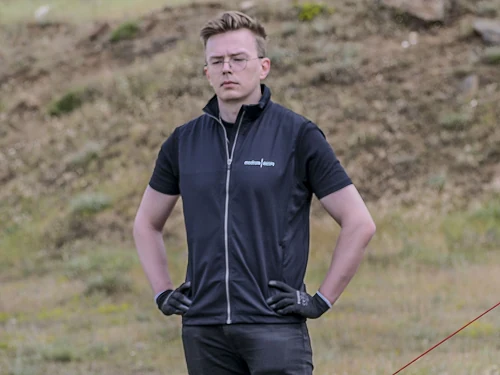

About
I’m Pietari Pakarinen, a UX designer with a software development background. I’m based in Tampere, Finland.

I turn ambiguous needs into detailed requirements, then translate those requirements into clear, usable experiences.
I’m most interested in understanding what a product needs to do and defining how it should behave. My development background helps me reason about technical constraints and work with engineers through implementation.
I have an M.Sc. in Human–Technology Interaction, and experience across defence, critical communications and enterprise software. Alongside design and development, I’ve taught web development and taken on project coordination.
Outside work, you’ll usually find me engaging in some nerdy hobby, like bouldering, Dungeons & Dragons or Magic: The Gathering.